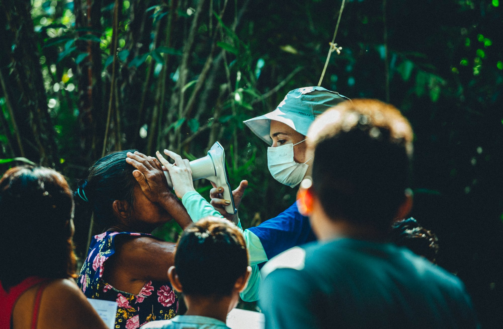
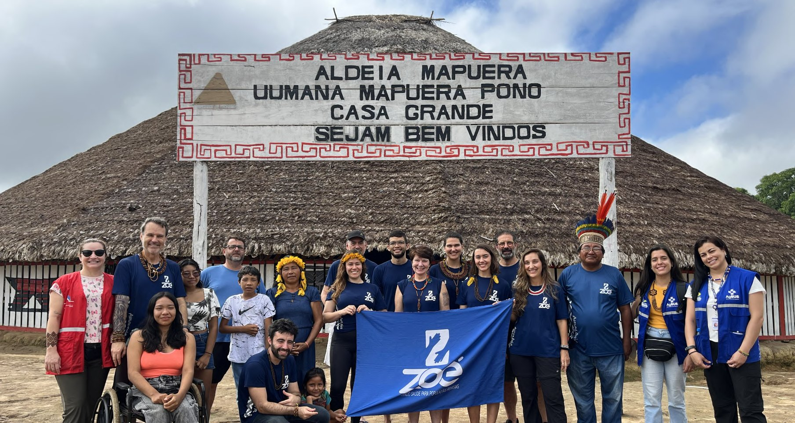

Zoé · Balanço do 1º semestre de 2026
Sete expedições. Milhares de vidas alcançadas. E tudo isso começa com você.
Levamos saúde e esperança a comunidades remotas da Amazônia, e nada disso existe sem doadores que sustentam a operação o ano inteiro. Some-se a eles.
1º semestre de 2026

Aldeia Mapuera · Povo Wai-Wai
Uma aldeia que nunca tinha recebido especialistas.
No coração da Terra Indígena Nhamundá/Mapuera, onde só se chega de avião, a comunidade Wai-Wai recebeu, pela primeira vez, atenção médica especializada dentro do próprio território.
Foram 487 pessoas atendidas, 1.589 exames oftalmológicos em quem nunca havia feito um, e uma Casa de Saúde reformada que ficou para sempre na aldeia. Numa emergência grave, a mochila de primeiros socorros da equipe salvou uma paciente — a horas de distância do hospital mais próximo.
Sua doação é o que leva a equipe até onde ninguém mais chega.
Para onde vai o seu apoio
Como a sua doação vira saúde na floresta.
As sete expedições
Veja para onde o seu apoio foi.
Toque em qualquer expedição para abrir o relatório em versão simplificada com fotos, números e link para o documento completo.
Histórias que o seu apoio escreveu
Vozes de quem esteve lá.
“Esse modelo de trabalho está cuidando do território, do meio ambiente, da cultura e das relações sociais desses povos.”
Faça parte
Como você quer apoiar hoje?
Se você já doa mensalmente, temos um caminho especial para você. Escolha abaixo.
Meta do 2º semestre · As próximas 6 expedições
Doação segura via FundraiseUp · você escolhe o valor e cancela quando quiser.
Você já é o motor disso
Obrigado por sustentar a Zoé o ano inteiro.
Sua doação mensal é o que garante a próxima expedição. Se quiser ir além neste segundo semestre, faça uma doação extra pontual.
Fazer uma doação extra
Prefere aumentar sua mensalidade? Ajustar minha doação mensal
Doação segura via FundraiseUp.
O segundo semestre já começou
Cada expedição existe por causa de quem doa.
São os doadores pessoas físicas que mantêm a operação funcionando entre uma expedição e outra. No segundo semestre, queremos realizar mais 6 expedições e chegar a mais de 10 comunidades que precisam de atendimento médico — e a sua doação garante a próxima partida.
Garantir a próxima expediçãoDoação segura · você escolhe o valor e a recorrência
Transparência total: veja nossa prestação de contasNossas expedições com recurso público têm prestação de contas auditada.